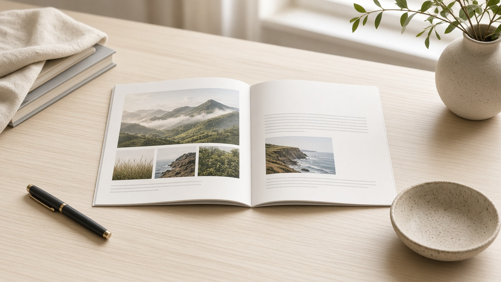
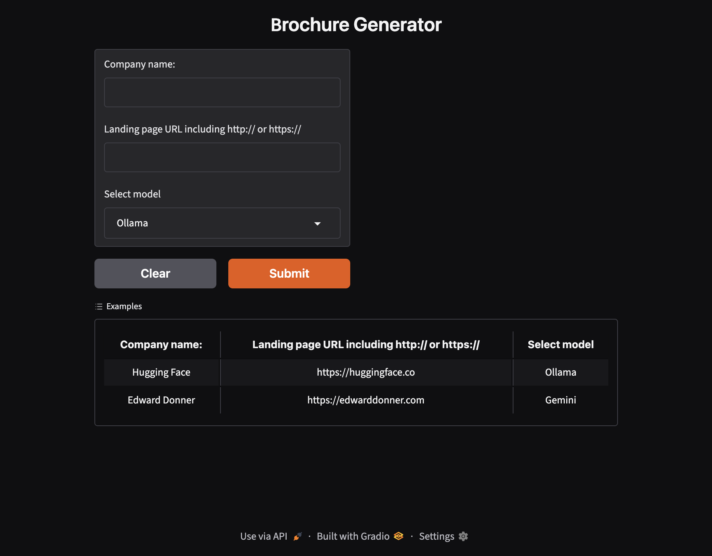
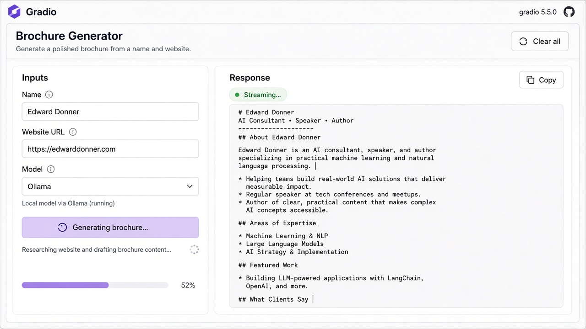
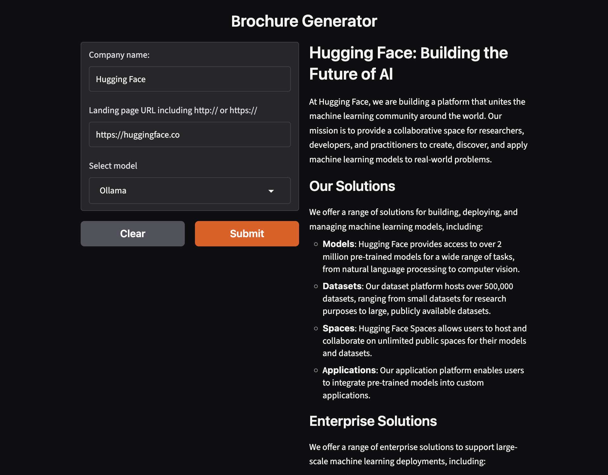

Building Multi-Model Gradio UIs with Multi-Model Streaming
- By Arusha Shahi
I wanted one brochure tool that could run on a local Ollama model when I cared about privacy, and switch to Gemini’s free cloud models when I wanted speed — without shipping two apps. Here’s how I built a multi-model Gradio UI with multi-model streaming.

The idea
Brochure Generator takes a company name and landing page URL, then drafts brochure-style markdown. The interesting part is the provider switch: the same form streams from Ollama or Gemini, and the user can stop generation mid-stream.
Live demo: Brochure Generator on Gradio.
Step 1: One form, two providers
Keep the UI small. Three inputs are enough:
- Company name
- Landing page URL (with
http://orhttps://) - Model dropdown:
OllamaorGemini
Gradio’s Interface (or Blocks with the same inputs) becomes a single contract. The front end never needs to know how each provider streams — only that the backend yields text.

import gradio as gr
def stream_brochure(company_name: str, url: str, model: str = "Ollama"):
"""Yield growing markdown so Gradio can stream the response."""
prompt = build_brochure_prompt(company_name, url)
if model == "Gemini":
yield from stream_gemini(prompt)
else:
yield from stream_ollama(prompt)
demo = gr.Interface(
fn=stream_brochure,
inputs=[
gr.Textbox(label="Company name:"),
gr.Textbox(label="Landing page URL including http:// or https://"),
gr.Dropdown(choices=["Ollama", "Gemini"], value="Ollama", label="Select model"),
],
outputs=gr.Markdown(label="Response:"),
examples=[
["Hugging Face", "https://huggingface.co", "Ollama"],
["Edward Donner", "https://edwarddonner.com", "Gemini"],
],
title="Brochure Generator",
)
demo.launch()
Step 2: Treat both models as generators
Multi-model streaming works best when every provider speaks the same shape: a Python generator that yields partial strings. Gradio’s queue then updates the Markdown component as tokens arrive (SSE under the hood).
Locally, Ollama can stream chat completions. In the cloud, Gemini’s free-tier client can stream chunks the same way. Your UI code stays identical.
def stream_ollama(prompt: str):
accumulated = ""
for chunk in ollama_chat_stream(prompt):
accumulated += chunk
yield accumulated
def stream_gemini(prompt: str):
accumulated = ""
for chunk in gemini_generate_stream(prompt):
accumulated += chunk
yield accumulated

Step 3: Add Submit, Stop, and Clear
Long brochure drafts need control. Gradio’s queue behaviour plus a Stop action lets users cancel an in-flight stream. Clear resets company name, URL, model choice, and the response pane so the next demo starts clean.
That combination — stream, stop, clear — is what makes a multi-model UI feel like a product, not a notebook cell.

Step 4: Why multi-model matters
- Ollama — run offline or keep sensitive URLs on your machine.
- Gemini free models — quick cloud inference when local hardware is busy.
- One Gradio surface — compare outputs without rewriting prompts or layouts.
The brochure app is a small example, but the pattern scales: chatbots, summarizers, and research tools can all share one streaming UI with a provider switch.
The result
By designing around a shared streaming function and a simple Gradio form, I got a Brochure Generator that feels responsive on both Ollama and Gemini. Same inputs, same markdown output, live tokens either way.
If you’re building AI demos, start with one UI and make every model a generator. The rest — examples, stop buttons, and hosting on Gradio — falls into place.